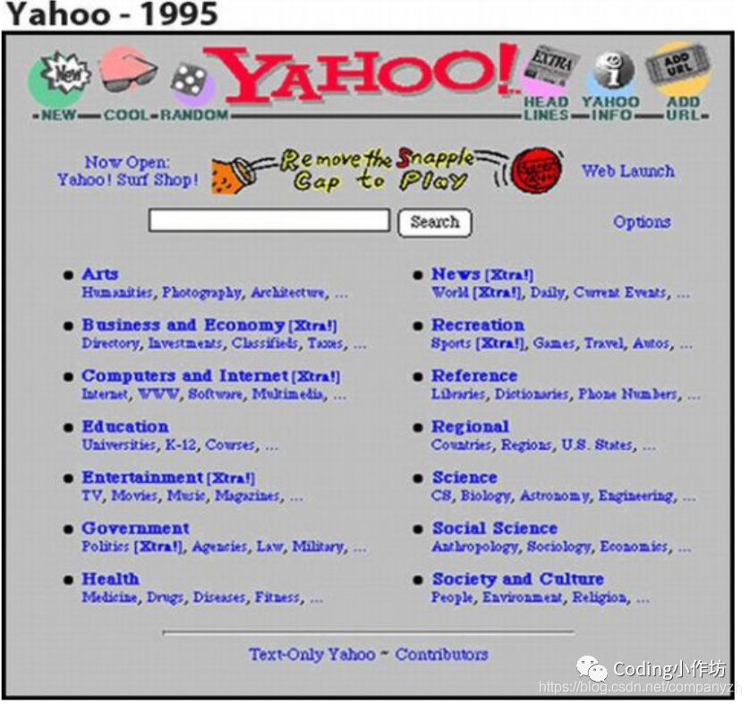
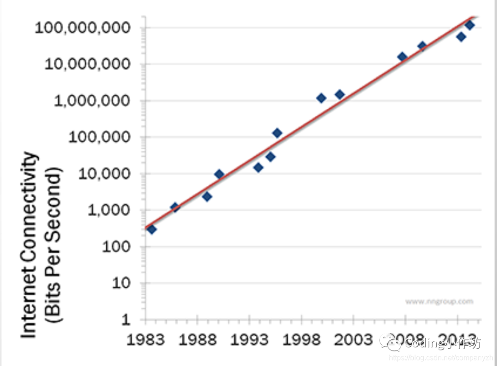
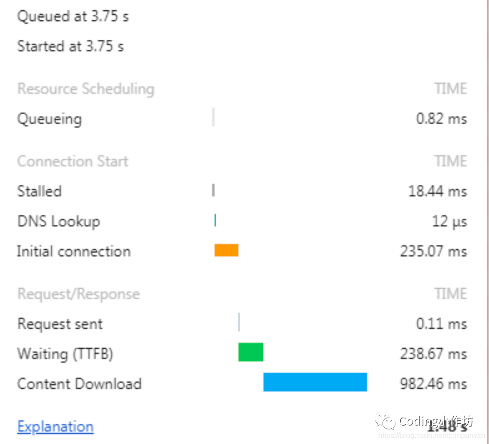

- 01 我应该站在谁的肩膀上 - OSI vs TCPIP模型.md.html
- 02 万丈高楼平地起- 物理层 + 数据链路层.md.html
- 03 OSI的灵魂就是我 - 网络层.md.html
- 04 要快还是要稳你说好了 - 传输层.md.html
- 05 是时候展现真正的技术了 - 应用层.md.html
- 06 重回小学课堂 - 二进制101.md.html
- 07 1+1 = 2吗？ - 二进制的计算.md.html
- 08 16进制又是个什么鬼？ - 16进制的讲解.md.html
- 09 我想有个家 - 什么是IP地址.md.html
- 10 我可是住二环的人 - IP地址的组成和分类.md.html
- 11 我已经没地方住了吗 - IPv6.md.html
- 12 向左还是向右 - IP路由.md.html
- 13 我能给你安全感 - TCP（一）.md.html
- 14 我那不为人知的秘密是什么 - TCP（二）.md.html
- 15 不问收没收到，就问快不快 - UDP.md.html
- 16 我为什么与众不同 - TCP高级篇（拥塞模型）.md.html
- 17 来，先看看我的家谱 - HTTP的身世.md.html
- 18 我都这么成功了，你却说我不行 - HTTP 的特点和缺点.md.html
- 19 我老了，让我儿子来吧 - HTTP2.md.html
- 20 稳重的大外甥 - HTTPS.md.html
- 21 HTTP的高级篇 - HTTPClient（Java）.md.html
- 22 想来我家，你自己查呀 - DNS.md.html
- 23 来的早，不如来得巧 - NAT.md.html
- 24 辛苦的邮政 - SMTP.md.html
- 25 你就是看不见我 - VPN.md.html
- 26 黑客的好帮手 - SSH.md.html
- 27 你可以得到我的心，却得不到我的人 - 物理安全设备.md.html
- 28 你怎么证明你就是你 - 身份验证和访问控制.md.html
- 29 我要怎么藏好我的考研资料 - 网络攻击（一）.md.html
- 30 我要怎么藏好我的考研资料 - 网络攻击（二）.md.html
- 31 如何保护我的考研资料 - 网络攻击防范.md.html
- 32 Linux网络安全 - 安全实战.md.html
- 33 结语.md.html
- 捐赠
17 来，先看看我的家谱 - HTTP的身世
我们今天开始来看一个重中之重的话题，那就是HTTP。开始我们的话题之前，不知道你面试的时候有没有遇到过HTTP的问题呀。我们先来自我检测一下，下面的这些题你都能回答上来吗？
- Http与Https的区别?
- URI和URL的区别?
- HTTP方法有哪些？
- 一次完整的HTTP请求所经历。
- 常见的HTTP相应状态码。
什么是HTTP?
http是一个简单的请求-响应协议，它通常运行在TCP之上。它指定了客户端可能发送给服务器什么样的消息以及得到什么样的响应。
题外话->我面试阿里的时候呢, 就被问到了知不知道HTTP2. 当时呢回答了，但是之后想了一下. 感觉这个是一个既深入又不深入的话题. 说不深入呢, 无非就是一个协议吗, protocol,对不对？深入呢, 就是我们接下来要探讨的东西。我们不仅要讨论什么是HTTP, 还要讨论对我们工程师来说不管是建网站呀, 还是应用或者是对API都有什么影响。可能有的同学根本就不知道有这个http/1.1,http/2或者说http/3的. 就是说你只是知道http, 但是不知道还分这个1,2,3。
HTTP的成长史
早在 HTTP 建立之初，主要就是为了将超文本标记语言(HTML)文档从Web服务器传送到客户端的浏览器。也是说对于前端来说，我们所写的HTML页面将要放在我们的 web 服务器上，用户端通过浏览器访问url地址来获取网页的显示内容，但是到了 WEB2.0 以来，我们的页面变得复杂，不仅仅单纯的是一些简单的文字和图片，同时我们的 HTML 页面有了 CSS，Javascript，来丰富我们的页面展示，当AJAX的出现，我们又多了一种向服务器端获取数据的方法，这些其实都是基于HTTP协议的。同样到了移动互联网时代，我们页面可以跑在手机端浏览器里面，但是和PC相比，手机端的网络情况更加复杂，这使得我们开始了不得不对 HTTP 进行深入理解并不断优化过程中.
HTTP重要里程碑的时间点
- Http0.9 -> 1991
- Http1.0 ->1996
- Http 1.1 -> 1999
- Http2 -> 2015
Ok。世界在进步, HTTP也在进步, 大家第一次接触网络的时候是什么时候还记得吗?Amazon和yahoo大家知道吧。现在他们这个网站华丽呼哨的, 最早的时候是什么样子你们知道吗, 看看这两个图片。


就是这样. 就是几个名字, 几个链接, 再来几张图片（不知道如果现在Amazon还是这个首页的话，我会愿不愿意加入）, 如果大家现在能够穿越回去, 那你简直就是大拿呀, 神一样的存在。（题外话->顺便推荐一下back to future这个电影呀)。
是不是你点一个图片链接，就跳到另一个类似的网页。如果幸运的话, 给你几张画。你就美的屁颠屁颠的了，所以那个时候没有太多和用户交互的东西, 顶多就有一个search box对吧。当然那时候网速也差, 我记得我当年上网用那个”猫”，连续下载了两天，就不告诉你下什么了。我家亲戚打不进来电话，那个着急呀. 那个时候的网速是多少知道吗，9600 bits per second，56k。这还算是奢侈的。
1998年有一个大神叫这个nielsen 发表了这个尼尔森定律(高端用户带宽将以平均每年50%的增幅增长，每21个月带宽速率将增长一倍)和这个摩尔定律差不多。

但是他这个呢是说网速的bandwidth，就是带宽。从1983到2014吧-差不多满足他的预测。后来又有了手机上网, 光纤就打破了他的预测。我们家的好像是500m的吧。所以我能同时看这个netflix还能同时下载。当然网民也从这个1993年的2亿5千万到现在不知道几十亿了。大家猜猜哪个国家的网速是最快的（中国台湾）? Ok. 言归正传呀, 如果网络世界这么美好的话，为什么需要HTTP/2. 跟他有什么关系。
如果一个现成的协议已经用了二十多年为什么需要一个新的协议。为什么要去修复他呢, 对吧。老话说的话，存在即合理，没坏就被碰, 这是我的老话呀。所以我们要问的是, 有什么问题 -> what is the problem？大家猜一下。1996的时候有一个人, 写了一篇论文就这个”It’s the latency, stupid” 愚蠢的延迟。这个人解释说我们面临的最大问题不是带宽而是延迟。为了让大家更好的理解一下，我给大家解释一下什么是带宽, 什么是延迟。
带宽
带宽是在被用来描述信道时，带宽是指能够有效通过该信道的信号的最大频带宽度。
延迟
延迟是在传输介质中传输所用的时间，即从报文开始进入网络到它开始离开网络之间的时间。
通俗点就是说一条高速公路，带宽表示的是有几条车道。延迟就是走过某段距离所花费的时间，当然影响的因素很多比如限速, 是否拥挤等等。对于我们的网络世界呢, 现在有两个因素。一个是页面的容量，现在都讲究这个富（rich）客户端。一页都几mb甚至几十的都有。这个必然会延长加载时间。如果你仔细观察的话，你就会发现很多这些内容吧，还不是你想看的，而是广告。我们花费了很多的带宽就下载广告。但是这就是现在的互联网没办法。
Ok，另一个更大的因素是什么-Latency，Latency是有限的。他是受到光速的限制的。这就意味着在一个真空的环境下, 没有任何干扰，基本上80-200ms可以从A -> B。Latency会影响你的load time也就是加载。你增加你的带宽, 加载的时间会按比例的缩小。但是当你加到某一个速度的时候, 你会发现增加带宽对于减小加载的影响会越来越小。比如1mb的网速, 加载一个页面需要3秒, 5m->1.5秒，10m-> 1.3秒。加载速度会影响这个用户的行为。如果一个页面加载时间过长，用户会放弃加载，失去兴趣。Amazon发现100ms的延迟会失去1%的用户。1s的延迟会失去7%的用户，想象一下如果你是在cart and checkout就是这个购物车-结算组，你把这个latency减少了一秒。用户增加了7%，意味着什么？意味着你可以为公司带来更高的收入，给你们组分红，给你升职，出任ceo，赢取白富美。因为你做到了, 别人没做到呀。（有点想的太美啦）
为什么现在的网页会有这个问题呢？以前的网页是什么, html和这个文字附带连接，就是一个请求。外部的文件比如css，js很少。现在呢，大量的连接，有些还需要从第三方去下载。所以一个请求添加了多个请求。一个典型的报纸的首页会有400个请求，是不是很可怕。如果你在放大的去看某一个请求，你会发现这个请求会被分成不同的区域有着不同的时间，你可以看到这个队列时间，DNS查找时间, 最初的连接,下载等等。

其实你要是明白这个网络模型的话, 这个问题其实是TCP的问题（你是不是心想，TCP咱熟呀，HTTP和TCP这两哥俩有啥关系）。看这个TCP/IP 模型呀。从上到下是应用层，传输层，网络层，链路层和物理层。所有的传输在传输层, 在这里就是TCP。一个简短的例子，发送一段简单的文字, 然后返回。首先是TCP连接也就是所谓的三次握手。基本上客户端先发一个sync(Synchronization packet)给服务器。然后服务器发送sync-ack(Synchronization Acknowledgment)也就是表示收到，然后再发一个sync。Client在回一个ack表示我也收到了。这个连接就算完成了, 然后开始发送请求, 收到回复。你会发现这段连接没有任何的实际数据，可是全程需要一段时间，比如94ms（我上次测试的一个数据）。连接建立就需要90ms，是不是很浪费时间, 这还不算完,TCP关闭同样需要四次分手。（之前讲过的内容呀，忘了的同学，回去再看一下）
最初91年的时候当HTTP/0.9出现的时候, 一个请求回复。很简单, 没有所谓的头信息什么的，就是内容。一个请求就是建立TCP连接，传送, 关闭TCP。HTTP/1.0的时候，引入了头信息，但是也不多。整个过程也还是这么简单。HTTP/1.1的时候呢加入了几个新的特点。
HTTP1.1的特点
- 提供了更多选择的缓存头来控制缓存策略。
- 带宽优化及网络连接的使用。HTTP1.0中，存在一些浪费带宽的现象，例如客户端只是需要某个对象的一部分，而服务器却将整个对象送过来了，并且不支持断点续传功能，HTTP1.1则在请求头引入了range头域，它允许只请求资源的某个部分，即返回码是206（Partial Content），这样就方便了开发者自由的选择以便于充分利用带宽和连接。
- Host头处理，在HTTP1.0中认为每台服务器都绑定一个唯一的IP地址。因此，请求消息中的URL并没有传递主机名（hostname）。但随着虚拟主机技术的发展，在一台物理服务器上可以存在多个虚拟主机（Multi-homed Web Servers），并且它们共享一个IP地址。HTTP1.1的请求消息和响应消息都应支持Host头域，且请求消息中如果没有Host头域会报告一个错误（400 Bad Request）。
- 最重要的是长连接，有一个叫做Connection的信息，默认设置为keep-alive。就是说可以用一个连接来传送多个请求和回复。不需要打开,传，关闭，打开，传，关闭，而是可以在一个TCP连接里，做多次传输，然而这个并没有完全解决TCP“浪费时间”的问题对不对, 还是需要打开和关闭一次。
- 错误通知的管理: 在HTTP1.1中新增了24个错误状态响应码，如409（Conflict）表示请求的资源与资源的当前状态发生冲突；410（Gone）表示服务器上的某个资源被永久性的删除 大家知道哪些状态码。
常见的状态码
以下的状态码是需要你背诵全文的。
比如
- 200， 201(成功请求并创建了新的资源)
- 202(已经接受请求，但未处理完成)
- 400 (客户端请求的语法错误，服务器无法理解)
- 401(Unauthorized) 请求要求用户的身份认证
- 403(Forbidden) 服务器理解请求客户端的请求，但是拒绝执行此请求
- 404(服务器无法根据客户端的请求找到资源（网页）。通过此代码，网站设计人员可设置”您所请求的资源无法找到”的个性页面
- 500（服务器内部错误，无法完成请求）
© 2019 - 2023 Liangliang Lee. Powered by gin and hexo-theme-book.